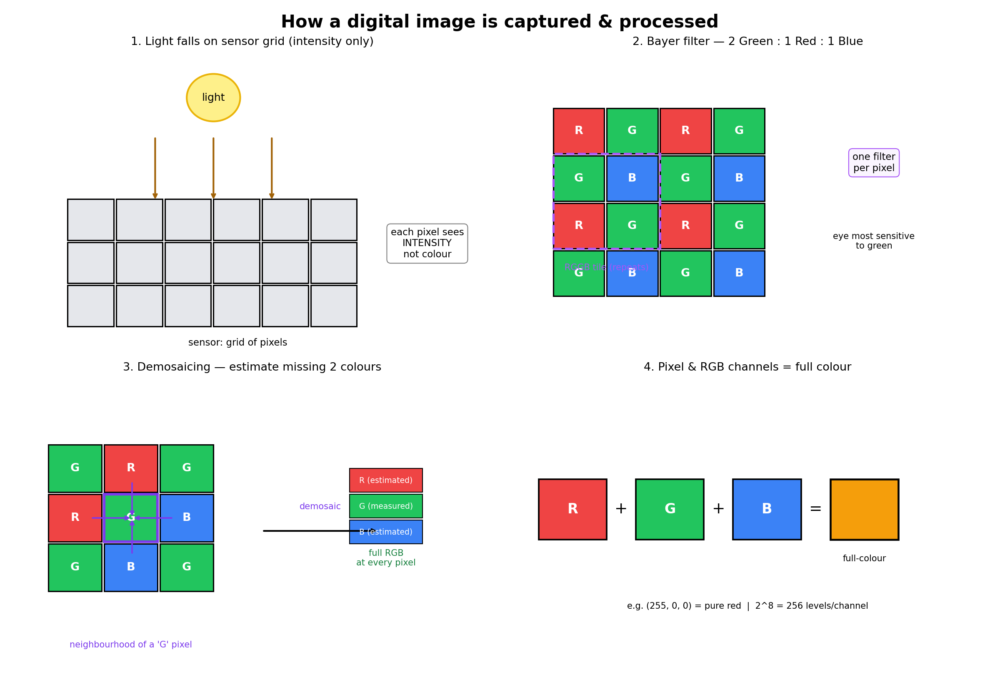
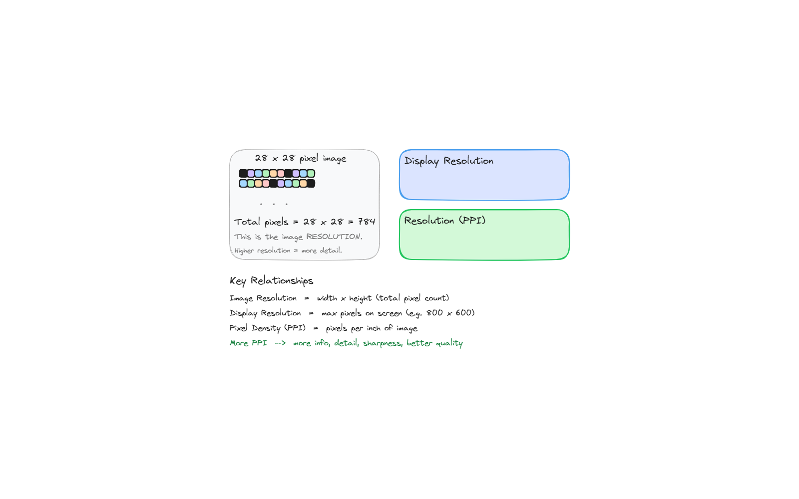
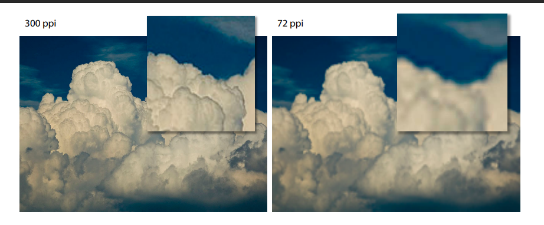
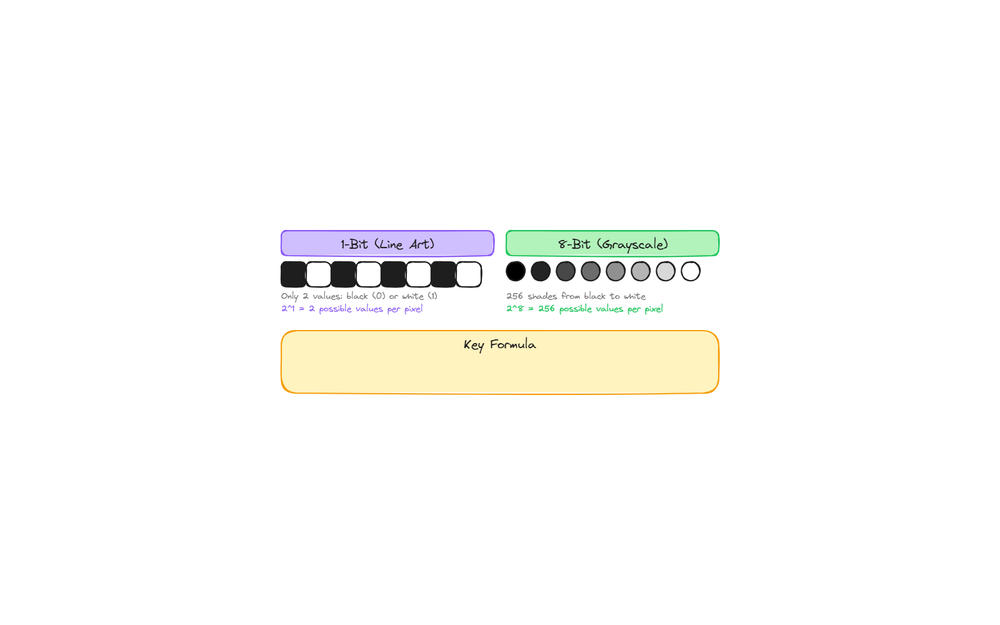
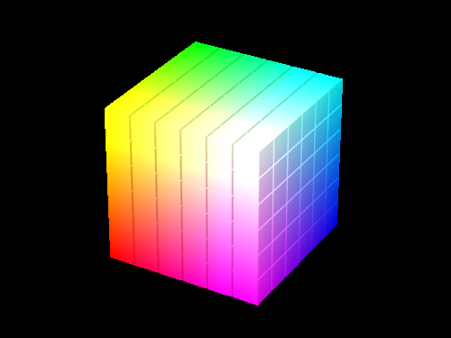
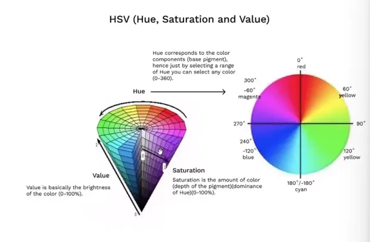
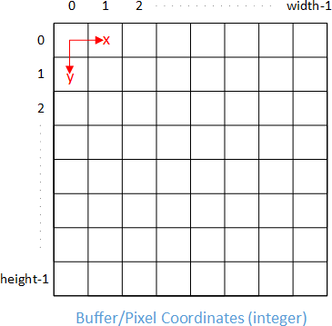

A practical guide to how digital images are captured, represented, and manipulated — from Bayer filters and pixels to RGB, HSV, coordinates, and core OpenCV operations.
Source: Digital Image Fundamentals.pdf — restructured for the web with original figures.
1. How Is a Digital Image Captured & Processed?
Light falls on a sensor present in a camera / phone which consists of a grid of pixels. The light-sensitive element on a pixel cannot detect colour — only intensity.
To calculate the RGB values of each pixel, the camera mostly uses a Bayer filter. This Bayer filter places an R, G, or B filter on top of each pixel, helping to detect the value of one particular colour. The missing two colour values are estimated using adjacent pixels through demosaicing.
The Bayer filter pattern uses two green pixels for every red and blue pixel, because the human eye is more sensitive to green than to other wavelengths. The Bayer filter requires only one filter sensor per pixel, rather than needing separate sensors for each colour channel. Digital cameras then use demosaicing algorithms to convert this colour mosaic into an equally sized mosaic of true colours, effectively reconstructing the full RGB information at every pixel location.

Key takeaway: each photosite measures one colour; full RGB at every pixel is reconstructed.
2. Pixels
Pixel, short for picture element, represents a single point of light carrying colour and brightness information.
- For a greyscale image, each pixel has a value between 0 and 255, representing the darkest and lightest parts of the image respectively.
- Coloured images consist of three separate channels: red, green, and blue. The overall image is formed by combining these RGB channels into one consolidated image.
3. Image Resolution
- An image with 28 × 28 pixels has a resolution of 784 pixels.
- Display resolution is the maximum that can fit on the full dimension of an image. Example:
800 × 600 = 480,000pixels on a PC screen. - Pixel density determines the number of pixels per inch of image. The more pixels per unit width, the higher the clarity.
- Resolution is measured in pixels per inch (PPI).
Pixel dimension = Length × PPI. More PPI leads to more information, detail, sharpness, and better quality.


| Term | Meaning | Example |
|---|---|---|
| Image resolution | width × height | 28 × 28 = 784 |
| Display resolution | max pixels a screen can show | 800 × 600 = 480,000 |
| Pixel density (PPI) | pixels per inch | 300 PPI sharper than 72 PPI |
4. Bit Depth
Bit depth refers to the number of bits used to represent colour or brightness information of a single pixel. In line art, where only two colours are required — 0 for black and 1 for white — one bit suffices.
For greyscale images, 8 bits = 1 byte per pixel. With 8 bits, we have 2⁸ = 256 tonal levels — 256 distinct shades of grey from pure black to pure white.

5. Grayscale
Grayscale is the simplest model, representing colours using brightness 0 (black) to 255 (white). Used when shape, structure, and brightness matter more than colour. Uses less space and processes faster.
Applications:
- OCR and document scanning — more detail while keeping file size small.
- Medical imaging and terrain mapping — more depth. 8-bit = 256 shades; 16-bit = 65,536 shades. 8-bit for general use, 16-bit for medical / remote sensing.
| Depth | Levels | Use |
|---|---|---|
| 1-bit | 2 | line art |
| 8-bit | 256 | general use |
| 16-bit | 65,536 | medical, remote sensing |
6. RGB
RGB uses additive colour mixing. Heavily used in screens. Based on a 3D Cartesian system. Digital images are 8 bits per channel = 256 values per channel:
R × G × B = 256³ = 16,777,216 colours. Example: (255, 0, 0) = pure red.

7. HSV (Hue, Saturation, Value)
HSV is more perceptually uniform than RGB — closer to how humans perceive colour.
- Hue — type of colour, 0–360°: red 0°, yellow 60°, green 120°, cyan 180°, blue 240°, magenta 300°.
- Saturation — intensity 0–100%. 0% = grey, 100% = pure colour.
- Value — brightness 0–100%. 0% = black regardless of hue/saturation.
HSV has an advantage over RGB for extracting grayscale information, since each channel can be separated.

8. Image Coordinates
- Origin (0, 0) — top-left corner.
- X-axis — horizontal, left → right (column number).
- Y-axis — vertical, top → bottom (row number).
Pixel location is (x, y) with both starting from 0.

⚠️ Unlike maths class: y grows downwards.
9. Pixel Intensity
Pixel intensity = sum, mean, or median intensity within a region of interest (ROI).
- Grayscale: intensity ∝ pixel value (0 = black, 255 = white).
- Colour: computed from RGB channels.
Used for thresholding, segmentation, feature extraction. Mean = overall brightness; sum = total brightness; median = robust to noise.
10. Image Operations
Geometric transformations deform the pixel grid and map it to the destination image.
10.1 Resize
Prefer cv.INTER_AREA for shrinking, cv.INTER_CUBIC / cv.INTER_LINEAR for zooming. Example: 800×600 → ×0.5 → 400×300 (480,000 → 120,000 px).
cv.resize(src, dsize[, dst[, fx[, fy[, interpolation]]]]) -> dstimport cv2 as cv
img = cv.imread("messi5.jpg")
res = cv.resize(img, None, fx=2, fy=2, interpolation=cv.INTER_CUBIC)
# OR
height, width = img.shape[:2]
res = cv.resize(img, (2*width, 2*height), interpolation=cv.INTER_CUBIC)10.2 Crop
Selecting a region, not resizing. No dedicated crop() — use NumPy slicing image[y1:y2, x1:x2].
# NumPy slicing: image[y1:y2, x1:x2]
ball = img[280:340, 330:390]10.3 Rotate
Parameters: centre, angle, scale. Positive angle = counter-clockwise.
import cv2 as cv
img = cv.imread("image.jpg")
height, width = img.shape[:2]
center = (width // 2, height // 2)
matrix = cv.getRotationMatrix2D(center, 45, 1.0)
rotated = cv.warpAffine(img, matrix, (width, height))10.4 Flip
import cv2 as cv
horizontal = cv.flip(img, 1) # Horizontal flip
vertical = cv.flip(img, 0) # Vertical flip
both = cv.flip(img, -1) # Both directions10.5 Translate
Shifting location.
import numpy as np
import cv2 as cv
M = np.float32([[1, 0, 100], [0, 1, 50]])
dst = cv.warpAffine(img, M, (cols, rows))References
- Bayer filter: whatdigitalcamera.com
- Demosaicing: Wikipedia
- Pixel, Bit depth: graphics-pro.com
- Resolution, Bits and Channels: UBC PDF
- Pixel density: Medium
- Grayscale: Lenovo glossary
- RGB: vincmazet.github.io
- HSV: zenn.dev
- HSV image: Medium
- Image coordinate system: apxml.com
- Geometric transformations: OpenCV docs
- Crop/ROI: OpenCV docs
- Flip: OpenCV docs